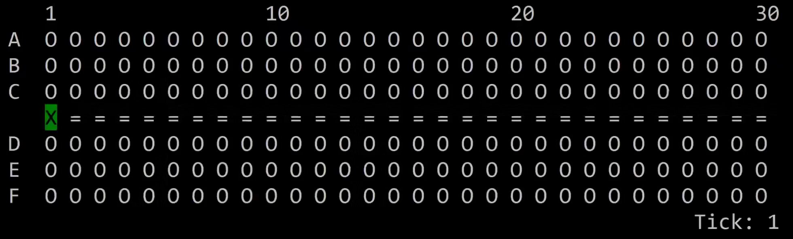

Marcel Yuwono 21 June 2020
Motivation
Recently, I received an email from ANA (All Nippon Airways) that my upcoming flight to the US will employ a new boarding method, separated into 6 groups. By order of entry:
- Passenger with rear window seats
- Passenger with rear middle seats
- Passenger with rear aisle seats
- Passenger with front window seats
- Passenger with front middle seats
- Passenger with front aisle seats
I travel quite frequently, anywhere between 6-10 separate flights each year but I have never boarded an airplane this way. Allegedly, United uses a Window-Middle-Aisle method but I've never encountered this on my United flights in practice.
Why do different airlines use different boarding methods? Faster boarding decreases gate costs and delays, so why don't all airlines find and use one, fastest method?
The Model
To answer these questions, I modeled a Plane Boarding simulator.
I used Python to visualize and export the data.
Here's what the model looks like:

This is a rough approximation of a 737, with 180 seats in 30 rows. The "=" marks the aisle, the O's are empty seats, and the X's are the passengers.
Time is calculated in ticks. Passengers enter through the left and move through the aisle. It takes one tick to move forward towards their row and they can only move if the space in front of them is empty. If they are at their target row, they take 5 ticks to stow their baggage before moving into the seat. It takes another tick each to move between the seats into their target seat.
For example, if the passenger in the figure above wanted to move to B3, they would take 2 ticks to walk forward two spots, then 5 ticks to store their baggage, then another 2 ticks to move to the middle seat.
There are some limitations to this model. First, there is no business/first class seating. Second, when passengers are in their row, they can "shift" through other passengers into their seat without having them make way by standing in the aisle. This may skew the results against Window-Middle-Aisle boarding.
Benchmarking
I tested a total of 5 different boarding methods, and ran each method 100 times through a benchmark. The benchmark records 6 different statistics:
- Average number of ticks to complete the boarding process
- Minimum number of ticks to complete the boarding process
- Maximum number of ticks to complete the boarding process
- Average number of ticks for a given passenger to be seated
- Minimum number of ticks for a given passenger to be seated
- Maximum number of ticks for a given passenger to be seated
Let's get started!
Back To Front
Back to front is the most natural way one would imagine to board a plane. Passengers are split between 6 groups of 5 rows each. Rows 26-30 boards first, and rows 1-5 boards lasts. The intuition is that by pushing people back first, we allow more aisle space (bandwidth) to be utilized thereby increasing the throughput:
And here's the results:
[BackToFront Benchmark] x100
avg-completion: 581.44 ticks.
min-completion: 547 ticks.
max-completion: 640 ticks.
avg-per-node: 308.61 ticks.
min-node: 32 ticks.
max-node: 640 ticks.
Surprisingly, Back to Front, although intuitive benched the second worse out of the 6 methods we tested.
In practice, because of the way the passengers are ordered, passengers stil need to wait for those in front of them to be seated so they can go forward enough to be in the correct row. This means that a lot of people in the aisle are just waiting for the person in front of them, while they could be stowing baggage concurrently if they were at the right row.
Window-Middle-Aisle
Here, the passengers are split into 3 groups of window, middle, aisle seats. The window group boards first, followed by the middle then the aisle:
By doing this, we eliminate the need for people to leave their seats to allow other passengers to scoot over to theirs. This model does not account for that behavior, but since stowing baggage is a much bigger limiting factor, the difference made by the lack of this behavior should be slight. Nevertheless, we should keep in mind that the benchmark results will slightly disadvantage Window-Middle-Aisle:
[WindowMA Benchmark] x100
avg-completion: 425.11 ticks.
min-completion: 393 ticks.
max-completion: 458 ticks.
avg-per-node: 219.74 ticks.
min-node: 9 ticks.
max-node: 458 ticks.
Already, even with the disadvantage, we see better numbers than Back To Front. On average, Window-Middle-Aisle takes 425 ticks vs 581 ticks by Back To Front, or a 27% speed up.
The key here is concurrent stowing. Since stowing baggage takes up most of the boarding time, we want to have as much people as possible across the aisle stowing baggage at the same time.
Window-Middle-Aisle Groups
This is the method that ANA decided to employ temporarily during the pandemic. There are 6 groups that board in this order: rear window, rear middle, rear aisle, front window, front middle, front aisle. Rear seats are seats with rows 16-30, front seats are rows 1-15:
Which hashes out to:
[WMAGroups Benchmark] x100
avg-completion: 457.96 ticks.
min-completion: 424 ticks.
max-completion: 485 ticks.
avg-per-node: 242.77 ticks.
min-node: 24 ticks.
max-node: 485 ticks.
ANA's new method turned out to be slower by around 7.2% than if they employed Window-Middle-Aisle without the rear or front grouping.
Random
Everyone boards at the same time, without the need of groups. This means the order of boarding is random:
Random performed on par with Window-Middle-Aisle, which isn't suprising because without implementing seat shuffling, they practically act the same:
[Random Benchmark] x100
avg-completion: 433.74 ticks.
min-completion: 407 ticks.
max-completion: 482 ticks.
avg-per-node: 224.19 ticks.
min-node: 8 ticks.
max-node: 482 ticks.
Southwest Airlines uses a unique boarding method. They allow passengers that board the plane to select their seating on a first come, first served basis. This basically acts like completely random boarding, except the first few passengers are likely to board the frontmost seats, as they are usually the most desirable.
In effect, Southwest's method acts like a Front-To-Back at first, then converges into a random process. Unsurprisingly, Southwest is consistently and significantly faster than other airlines at boarding, taking only 14 minutes compared to back-to-front (24 mins) in an experiment done in Gatwick Airport.
Steffen's Method
Finally, we test Steffen's method, proposed by Dr. Jason Steffen of UNLV, who claimed would dramatically increase boarding speed over other methods. It's a little hard to explain how it works, so I'll just show you the animation:
This benched the fastest out of all the tested methods, and by a wide margin:
[SteffenOptimal Benchmark] x1
avg-completion: 255 ticks.
min-completion: 255 ticks.
max-completion: 255 ticks.
avg-per-node: 139.5 ticks.
min-node: 24 ticks.
max-node: 255 ticks.
Steffen's method prioritizes concurrent stowing, parallelizing the process such that the same amount of the work is done in a condensed time frame.
However, as you might have observed in the animation, Steffen's method require a precise ordering; each passenger needs to board at the exact order for it to work, essentially creating 180 groups for the 180 passengers in our model. In a real world situation, it's difficult to expect people to board this way.
Visualization
Let's visualize how the different boarding methods stack against each other. I benched each method 100 times and recorded the time it takes for every passenger to be seated. Then, I graphed a histogram of these values normalized for probability.
The x-axis represents the amount of time (in ticks) it takes a given passenger to be seated. The y-axis represents the probability that any given passenger is seated within the bucket in the x-axis. For example, if in a back-to-front boarding, the x-values of 150-155 has the y-value of 1.5, then a given passenger boarding this way will have a 1.5% chance of being seated within 150-155 ticks.
This graph is interactive. Click on the legend items to toggle them on or off, or double-click to isolate a single item. This graph may run a little slow if you're on an older computer or a tablet. If so, click this link for a static version of this graph.
{kind=link}
Looks like you're on mobile. Click to enlarge the graph or open this site on a desktop for a fully interactive version of the graph. On larger phones, use landscape mode to view the interactive version of the graph. Alternatively, try this link.
Observations
If you're on desktop, try isolating the Front to Back graph in the visualization. We can see six distinct peaks which correspond to the 6 boarding groups. However, if we switch to Back to Front, we only five peaks, even though we also have six groups.
Going back to the Back to Front animation, it becomes clear that the five peaks don't correspond to the groups, but are instead spikes in which two adjacent boarding groups are able to board at the same time. Peak one occurs when group 1 has pushed further enough that group 2 can start boarding before group 1 has finished, and the other groups correspond to the same event with group 2 & 3, then groups 3 & 4, and so on, creating five peaks in the graph.
We can see the same happening in WMA Groups (ANA's method), where most of the boarding happens in the middle of the process, where the rear group has pushed enough back that the front group can start boarding.
Final Thoughts
Although Window Middle Aisle boarding is clearly superior to the traditional Back to Front, people who travel in groups would be largely inconvenienced if they have to board separately. However, since groups sit next to each other, allowing them to board with whoever has the earliest group can preserve the order of entry by preventing seat shuffling.
Earlier, I said that it's unreasonable to expect people to adhere to Steffen's method, lining up in a specific order before boarding the plane. However, this only applies with the assumption that people are assigned their seats during check-in. If we instead change seat assignment such that you are assigned your seat as you enter the plane when you get your passport scanned, we assign entering passengers the correct seat such that the order of entry follows Steffen's method.
Of course, this comes with drawback that groups wouldn't be able to sit together if they enter together, but with a few modifications to accomodate this exception, there is great potential for substantial speed-ups.
Whether passengers will tolerate having the freedom to choose their seats taken away from them is another argument. These days, I usually am able to select my seats right after I buy my tickets, which i personally like. If we then take into account business/first class, pre-boarding stasuses, loyalty members, and what-not, all these extra considerations will bog down painstakingly crafted optimal process.
Where do we go from here?
There's a bunch of things I want to improve with in my model to create more interesting methods. First, seat shuffling should be implemented to increase accuracy and remove the current Window-Middle-Aisle disadvantage. Next, allowing passengers to be bundled into a travelling group will let us crunch numbers that more represent real-life boarding.
Finally, if we assign each passenger a certain number of carry-on baggage to bring inside the plane, we can vary how much time it takes them to stow baggage. This will allow us to create methods which work around the heavy carriers by distribing their seating in a way that maximizes concurrent stowing.
Run it Yourself
If you would like to run the simulator yourself, the code is available in my Github here.
References
- Steffen, Jason. (2008). Optimal boarding method for airline passengers. Journal of Air Transport Management. 14. 10.1016/j.jairtraman .2008.03.003.
- Procedures on the Day of Travel. ANA Japan. 25 June 2020. Retrieved from Link.
- Kelleher, Suzanne Rowan. "Are Airlines About To Figure Out The Fastest Way To Board A Plane?" Forbes, Nov 2, 2019. Web. June 26 2020.